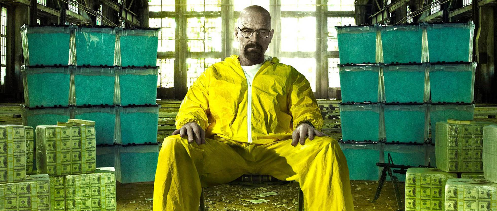
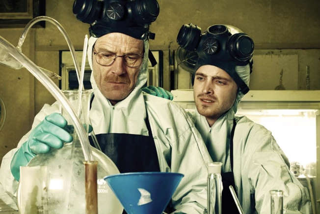

Os Segredos do Sucesso de Breaking Bad
Breaking Bad é amplamente considerada uma das melhores séries de todos os tempos por várias razões:
- Roteiro Brilhante: A série possui um roteiro detalhado e meticulosamente planejado, cheio de reviravoltas surpreendentes e arcos de personagem bem desenvolvidos. Vince Gilligan, o criador, manteve a narrativa coesa e envolvente ao longo de todas as temporadas.
- Desenvolvimento de Personagens: A transformação gradual de Walter White de um professor de química pacato em um impiedoso chefão das drogas é um dos desenvolvimentos de personagem mais bem-executados na história da televisão. O contraste e a evolução de personagens como Jesse Pinkman também adicionam profundidade e complexidade à história.
- Atuações Excepcionais: Bryan Cranston (Walter White) e Aaron Paul (Jesse Pinkman) entregaram performances inesquecíveis, ganhando diversos prêmios por seus papéis. O elenco de apoio, incluindo Anna Gunn (Skyler White) e Giancarlo Esposito (Gus Fring), também contribuiu significativamente para o sucesso da série.
- Estética e Direção: A série é visualmente impressionante, com uma cinematografia inovadora e uma direção que utiliza ângulos e técnicas de filmagem criativas para contar a história. A ambientação no deserto do Novo México adiciona uma atmosfera única à série.
- Temas Profundos: Breaking Bad explora temas complexos como moralidade, corrupção, ambição, família e consequências das escolhas. A série desafia os espectadores a refletirem sobre a natureza do bem e do mal e as motivações humanas.
- Evolução com a Era do Streaming: A popularidade da série cresceu exponencialmente quando foi disponibilizada na Netflix, permitindo que novos espectadores a descobrissem e a maratonassem. Isso ajudou a aumentar sua audiência e impacto cultural.
- Final Satisfatório: Ao contrário de muitas séries, Breaking Bad conseguiu concluir sua história de forma satisfatória, fechando os arcos dos personagens de maneira coerente e impactante.
Esses elementos combinados fazem de Breaking Bad uma série que não só entretém, mas também provoca reflexão e discussão, consolidando seu lugar na história da televisão.
Elenco
Anna Gunn
Personagem: Skyler White


Aaron Paul
Personagem: Jesse Pinkman
Curiosidades

A série foi elogiada por sua precisão científica, especialmente em relação à química. Gilligan e sua equipe consultaram químicos reais para garantir que os processos de fabricação de drogas fossem retratados com precisão. Além disso, os nomes dos episódios muitas vezes fazem referência a conceitos científicos.
Veja mais...